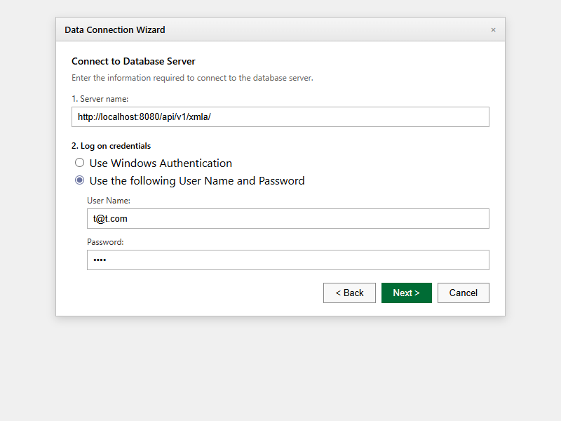
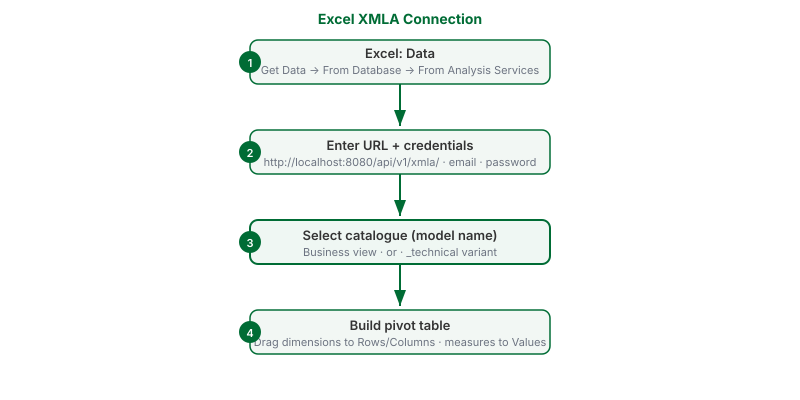

Connect Excel via XMLA
What this covers
Connecting Microsoft Excel to a Tessallite workspace via the XMLA endpoint, selecting a model catalogue, and building a pivot table from the model's dimensions and measures.
Before you start
- Role required: Analyst (Viewer) or higher.
- You will need: Microsoft Excel for Windows with the Data tab available, your email address, and your Tessallite password.
- You will also need: the XMLA endpoint URL. For a local install, this is
http://localhost:8080/api/v1/xmla/. For a cloud install, your system administrator provides the URL. - The trailing slash in the URL is required. The connection wizard does not accept the URL without it.
- Windows Authentication is not supported. You must enter your email address and password manually.
Step 1: Open the connection wizard
- Open Excel.
- Click the Data tab in the ribbon.
- Click Get Data.
- From the menu, select From Database.
- From the submenu, select From Analysis Services.
- The Data Connection Wizard opens.
Step 2: Enter the server address
- In the Server name field, enter the XMLA endpoint URL:
http://localhost:8080/api/v1/xmla/ - Under Log on credentials, select Use the following User Name and Password.
- In the User Name field, enter your email address.
- In the Password field, enter your Tessallite password.
- Click Next.

Step 3: Select a catalogue
- Excel connects to the gateway and retrieves a list of available catalogues.
- Each model appears twice in the list:
- The plain model name (e.g.
orders) — this is the business view, with curated fields and calculated measures. - The model name with
_technicalappended (e.g.orders_technical) — this is the unfiltered view, intended for modellers and power users.
- Select the catalogue you want to connect to. For most purposes, select the plain name.
- Click Next, then click Finish.

Step 4: Build a pivot table
- Excel asks where to place the data. Select a cell in your worksheet and click OK.
- The PivotTable Field List opens on the right side. It shows the dimensions and measures from the selected model.
- Drag dimension fields to the Rows or Columns area.
- Drag measure fields to the Values area.
- Excel queries Tessallite and populates the pivot table with results.

Refreshing the data
Right-click anywhere in the pivot table and select Refresh to retrieve the latest data from Tessallite.
Tenant-specific URL
If your system administrator has set up per-tenant XMLA endpoints, the URL format is:
http://<hostname>:8080/api/v1/xmla/<workspace-slug>
Replace <hostname> with the gateway host and <workspace-slug> with your workspace identifier. This form does not require a trailing slash.
Troubleshooting
| Symptom | Likely cause | What to do |
|---|---|---|
| "Unable to connect to data source" | Wrong URL format or gateway not running | Confirm the URL includes the trailing slash. Confirm the gateway service is running. |
| No catalogues appear after entering credentials | Authentication failed | Re-enter your email address and password. Do not select Windows Authentication. |
| Pivot table shows no data | No data in the model's source | Verify with the modeller that the source connection is active and data is present. |
| Pivot table figures appear incorrect | Wrong catalogue selected | Disconnect and reconnect using the plain catalogue name (business view), not the _technical variant. |